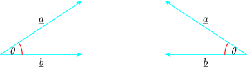
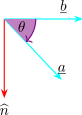

26.8 The Vector Product
The scalar product of the vector \(\underline {a}\) and \(\underline {b}\) is \(\hspace {0.2cm} \underline {a}\cdot \underline {b} = \left |\underline {a}\right | \left |\underline {b}\right |\cos \theta \), where \(\theta \) is the angle between the vectors \(\underline {a}\) and
\(\underline {b}\).
The vectors (or cross) product of the vectors \(\underline {a}\) and \(\underline {b}\) is defined as \[\underline {a}\times \underline {b} = \left |\underline {a}\right | \left |\underline {b}\right |\sin \theta \hspace {0.1cm}(\hat {\textbf {n}})\]
where \(\theta \) is the angle between \(\underline {a}\) and \(\underline {b}\) and \(\hat {\textbf {n}}\) is a unit vector perpendicular to both \(\underline {a}\) and \(\underline {b}\). The directions of \(\hat {\textbf {n}}\) is that in which a right handed cork screws would move when turned from \(\underline {a}\) to \(\underline {b}\).

If the line is in the opposite sense that is from \(\underline {b}\) to \(\underline {a}\), then the movement of the cork screw is in the direction of \(\hat {\textbf {n}}\).

\begin {align*} \text {So}\hspace {0.5cm} \underline {b}\times \underline {a} & = \left |\underline {b}\right | \left |\underline {a}\right |\sin \theta \hspace {0.1cm}(-\hat {\textbf {n}}) \\ & = - \left |\underline {a}\right | \left |\underline {b}\right |\sin \theta \hspace {0.1cm}(\hat {\textbf {n}})\\\\ \implies \hspace {0.5cm} \underline {b}\times \underline {a} & = - \underline {a}\times \underline {b} \\ \end {align*}
This statement is false because of the cross product is not commutative \(\hspace {0.3cm} \underline {a}\times \underline {b} \neq \underline {b}\times \underline {a}\).

By definition, \begin {align*} \textbf {i} \times \textbf {j} & = -\big (\textbf {j} \times \textbf {i}\big ) = \textbf {k}\\ \textbf {j} \times \textbf {k} & = -\big (\textbf {k} \times \textbf {j}\big ) = \textbf {i}\\ \textbf {k} \times \textbf {i} & = -\big (\textbf {i} \times \textbf {k}\big ) = \textbf {j} \end {align*}
\[\textbf {i} \times \textbf {i} = \textbf {j} \times \textbf {j} = \textbf {k} \times \textbf {k} = \textbf {0}\]
Let \(\hspace {0.2cm} \underline {a} = a_1 \textbf {i} + a_2\textbf {j} + a_3\textbf {k}\hspace {0.2cm}\) and \(\hspace {0.2cm} \underline {b} = b_1 \textbf {i} + b_2\textbf {j} + b_3\textbf {k}\hspace {0.2cm}\)
\begin {align*} \underline {a}\times \underline {b} & = \big ( a_1 \textbf {i} + a_2\textbf {j} + a_3\textbf {k}\big )\times \big (b_1 \textbf {i} + b_2\textbf {j} + b_3\textbf {k}\big )\\ & = a_1b_2\textbf {k} + a_1b_3\big (-\textbf {j}\big ) + a_2b_1\big (-\textbf {k}\big ) + a_2b_3\textbf {i} + a_3b_1\textbf {j} + a_3b_2\big (-\textbf {i} \big )\\ & = a_1b_2\textbf {k} - a_1b_3\textbf {j} - a_2b_1\textbf {k} + a_2b_3\textbf {i} + a_3b_1\textbf {j} - a_3b_2\textbf {i}\\ & = \big (a_2b_3 - a_3b_2\big )\textbf {i} - \big (a_3b_1 - a_1b_3\big )\textbf {j} + \big (a_1b_2 - a_2b_1\big )\textbf {k} \end {align*}
\begin {align*} \underline {a}\times \underline {b} & = \begin {vmatrix} \textbf {i} & \textbf {j} & \textbf {k}\\ a_1 & a_2 & a_3\\ b_1 & b_2 & b_3\\ \end {vmatrix}\\\\ & = \textbf {i}\begin {vmatrix} a_2 & a_3\\ b_2 & b_3\\ \end {vmatrix} - \textbf {j}\begin {vmatrix} a_1 & a_3\\ b_1 & b_3\\ \end {vmatrix} + \textbf {k}\begin {vmatrix} a_1 & a_2\\ b_1 & b_2\\ \end {vmatrix}\\ \end {align*}
So,
- 1.
- \(\hspace {0.2cm}\underline {a} \times \underline {b} = |\underline {a}||\underline {b}|\hspace {0.1cm}\sin \theta \big (\hat {\textbf {n}}\big )\hspace {0.3cm}\) formula
- 2.
- \(\hspace {0.2cm}\underline {a} \times \underline {b} = \big ( a_1 \textbf {i} + a_2\textbf {j} + a_3\textbf {k}\big )\times \big (b_1 \textbf {i} + b_2\textbf {j} + b_3\textbf {k}\big )\hspace {0.3cm}\) Directly
\(\underline {a}\times \underline {b} = \begin {vmatrix} \textbf {i} & \textbf {j} & \textbf {k}\\ a_1 & a_2 & a_3\\ b_1 & b_2 & b_3\\ \end {vmatrix}\hspace {0.4cm} \) Appropriate determinate
\(*\hspace {0.5cm}\) If \(\hspace {0.2cm}\underline {a}\times \underline {b} = 0,\hspace {0.2cm}\) then \(\hspace {0.2cm}\underline {a}\times \underline {b} = \left |\underline {a}\right | \left |\underline {b}\right |\sin \theta \hspace {0.1cm}(\hat {\textbf {n}})\hspace {0.2cm}\) either \(\hspace {0.2cm} \left |\underline {a}\right | = 0 \implies \underline {a}= \underline {0}\hspace {0.2cm}\) or \(\hspace {0.2cm} \left |\underline {b}\right | = 0\implies \underline {b} = \underline {0}\)
\[\sin \theta = 0 \hspace {0.3cm} \implies \hspace {0.3cm} \theta = 0, \hspace {0.3cm} \pi \]
Then \(\underline {a}\) and \(\underline {b}\) are in the same direction or in the same sense or opposite sense. If \(\sin \theta = 0\) then \(\underline {a}\) and \(\underline {b}\) are
parallel.
- 1.
-
- (a)
- \(\hspace {0.3cm} \big (\textbf {i} - 2\textbf {j} + 5\textbf {k}\big )\times \big (-2\textbf {i} + \textbf {j} - 3\textbf {k}\big )\)
- (b)
- \(\hspace {0.3cm} \big (3\textbf {j} - 2\textbf {k}\big ) \times \big (\textbf {j} + 3\textbf {k}\big )\)
- i.
- Evaluate the cross product directly.
- ii.
- Evaluate the cross product by an appropriate determinant.
- 2.
- Find a unit vector which is perpendicular to both \(\hspace {0.3cm} \underline {a} = 2\textbf {i} - \textbf {j} + 3\textbf {k}\hspace {0.2cm}\) and
\(\hspace {0.2cm} \underline {b} = -\textbf {i} + 3\textbf {j} - \textbf {k}\). - 3.
- Find the sine of the acute angle between \(\hspace {0.3cm} \underline {a} = 2\textbf {i} - \textbf {j} + 2\textbf {k}\hspace {0.2cm}\) and \(\hspace {0.3cm} \underline {b} = -3\textbf {i} + 4\textbf {j} + \textbf {k}\hspace {0.2cm}\)
- 4.
- Given that \(\hspace {0.3cm} \underline {a} = \textbf {i} + 2 \textbf {j} - 2\textbf {k}\hspace {0.2cm}\) and \(\hspace {0.3cm} \underline {b} = p\textbf {i} + q\textbf {k}\hspace {0.2cm}\) and that \(\underline {a}\times \underline {b} = 2\textbf {j} + \lambda \textbf { k}\). Find the values of the scalars constant \(\hspace {0.2cm} p, q\hspace {0.2cm}\) and \(\hspace {0.2cm} \lambda \).
- 5.
- Given that \(\hspace {0.3cm} \underline {u} = 2\textbf {i} - \textbf {j} + 2\textbf {k}\hspace {0.2cm}\) and \(\hspace {0.3cm} \underline {v} = a\textbf {i} + b\textbf {k}\hspace {0.2cm}\) and \(\underline {u}\times \underline {v} = \textbf {j} + c\textbf {k}\).
- (a)
- Find \(\hspace {0.3cm} a, b, c\)
- (b)
- Find the cosine of the angle between \(\underline {u}\) and \(\underline {v}\).
Questions
- 1.
-
- (a)
- Given the vectors \(\hspace {0.3cm} \underline {u} = 2\alpha \textbf {i} + 4\textbf {j} - 3\textbf {k}\hspace {0.2cm}\) and \(\hspace {0.3cm} \underline {v} = 4\textbf {i} + \beta \textbf {j} + 3\textbf {k}\hspace {0.2cm}\), find
- i.
- the values of \(\alpha \) and \(\beta \) if the vectors are parallel
- ii.
- a relation between \(\alpha \) and \(\beta \) if the vectors are perpendicular.
- (b)
- Find the area of the parallelogram \(ABCD\) given that its vertices are \(\hspace {0.2cm} A(2,1,-1),\\ \hspace {0.3cm} B(1,-7,3),\hspace {0.3cm} C(-2,5,1)\hspace {0.2cm}\) and \(\hspace {0.2cm} D(-1, 13, -3)\).
- 2.
- Given that \(\hspace {0.3cm} \underline {a} = 4\textbf {i} - 3\textbf {j} - \textbf {k}\hspace {0.2cm}m\), \(\hspace {0.3cm} \underline {b} = \textbf {i} + 2\textbf {j} + 3\textbf {k}\hspace {0.2cm}\) and \(\hspace {0.3cm} \underline {c} = -5\textbf {i} - 3\textbf {j} + 5\textbf {k}\hspace {0.2cm}\).
Find the following:
- (a)
- \(\hspace {0.2cm} 2\underline {a}\cdot \underline {b}\)
- (b)
- \(\hspace {0.2cm} \underline {a}\times 3\underline {b}\)
- (c)
- \(\hspace {0.2cm} \underline {a}\cdot \big (\underline {b}\times \underline {c}\big )\)
- (d)
- Find the area of the triangle \(ABC\) whose vertices are \(\hspace {0.2cm} A(2,-3,4),\hspace {0.3cm} B(0,1,2)\hspace {0.2cm}\) and \(\hspace {0.2cm} C(-1,2,0)\)
- 3.
-
- (a)
- If the point \(P\) has position vector \(\hspace {0.3cm} 2\textbf {i} - 4\textbf {j} + 5\textbf {k}\hspace {0.2cm}\) and \(\hspace {0.3cm} \overrightarrow {PQ} = 3\textbf {i} + 6\textbf {j} - 2\textbf {k},\hspace {0.2cm}\) find the position vector of the point \(Q\).
- (b)
- Find the values of \(a\) and \(b\) for which the vector \(\hspace {0.3cm} 2\textbf {i} + \textbf {j} + 3\textbf {k}\hspace {0.2cm}\) is perpendicular to both \(\hspace {0.2cm} 3\textbf {i}- b\textbf {k}\hspace {0.3cm}\) and \(\hspace {0.3cm} a\textbf {i} + 2 \textbf {j} + 2b\textbf {k}\hspace {0.2cm}\).
- (c)
- Given that \(\hspace {0.3cm} \underline {c} = 3\textbf {i} - \textbf {j} + 2\textbf {k}\hspace {0.2cm}\), \(\hspace {0.3cm} \underline {d} = -4\textbf {i} + 2\textbf {k}\hspace {0.2cm}\) and \(\hspace {0.3cm} \underline {e} = \textbf {i} - \textbf {j} - 2\textbf {k},\hspace {0.2cm}\) find \(\hspace {0.2cm}\underline {c}\cdot \big ( \underline {d}\times \underline {e}\big )\).
- (d)
- Given that \(\hspace {0.3cm} \underline {a} = i\textbf {i} + 2\textbf {j} - 3\textbf {k}\hspace {0.2cm}\) and \(\hspace {0.3cm} \underline {a} = -2\textbf {i} - \textbf {j} + 3,\textbf {k}\hspace {0.2cm}\) find \(\cot \theta ,\hspace {0.2cm}\) where \(\theta \) is angle between \(\underline {a}\) and \(\underline {b}\)
Questions on this section
Stuck on something here? Ask below and it stays attached to this topic.